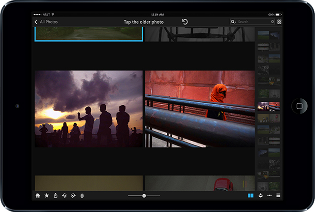
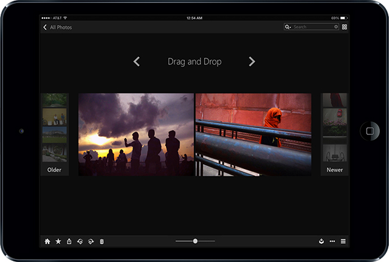

Sort out your old photos.
Effortless and playful.
Not every photo has (correct) EXIF data. Time-sequencing old photos without (correct) EXIF requires a lot of input from user, and sorting process can be long, complex and tedious. Mylio Pair introduces a human-computer double-end sorting process that turns this frustrating manual task into something easier, faster and even addictive. The user experience of this comparing and choosing process is designed to be intuitive, effortless and playful.
Pair. Compare. Done.
Every time Mylio Pair only presents two photos for user to choose the older (or the newer) one, then the software records each comparing result and uses it to constantly re-sequence all photos in the backend, and re-generates new pair for user to compare. After certain times of pair comparing, all photos can be sorted into a timeline.
1. System presents one pair of photos
2. User selects the older photo
3. Old photo filter effect provides feedback
4. System generates the next pair
Fuzzy and forgiving.
Another problem is that old photos can sometimes make user feel fuzzy. When user can not make a decision about the current compare, the software is able to let user to skip and move to the next pair. When user realizes she/he made a wrong pick, she/he can easily go back to the previous pairs and view the results. User can change the result simply by choosing the other photo, or tapping the undo button to remove the existing choice and just leave it fuzzy.
1. User can swipe up to pass the current pair if she/he feels fuzzy
2. System generates the next pair
3. User can also swipe down to go back to the last pair
4. Back to the last pair and showing user's choice
5. User changes the choice by just tapping the other photo
6. System provides feedback for the change of choice
7. User can undo a comparing result via the button
8. The old photo filter effect disappears after undo
Fast navigating and immersive viewing.
An optional navigating panel is designed to enable user to preview and control the flow of photo pairs, which provides a better efficiency for going forwards or backwards of multiple pairs.
1. Using the side panel, user can swipe up to skip multiple pairs
2. Or swipe down to go back to previous pairs
3. Side bar is toggled through a "pair" button
4. Closing the side bar, user can have full-view gaming
Mock-up in live.
A quick web mock-up to show the user interaction flow and feedbacks. Try clicking on photo, button and navigating panel to see how it works.
Sort and play.
Anytime. Anywhere.
The Mylio Pair UI is designed and built to adapt to all devices with different sizes, orientations and user gestures.
Behind the scene, design iterations.
The final Mylio Pair design was born from three conceptual frameworks. All three options were adopting the idea of "pair and compare", but they had quite different user interaction designs. By developing and testing each of them, the final design was chosen based on a synthetic performance of intuitivity, efficiency and adaptability.
Option 1: Landscape and Tap
Tap to choose, three buttons to go backward, forward and undo, navigating panel on the bottom.
+ Efficiency
+ Bigger view range
- Gesture inconsistency
- Unadaptability
- More buttons

Option 2: Swipe and Peek-view
Tap to choose, swipe to go backward and forward, one button to undo, navigating panel on the side.
+ Efficiency
+ Intuitivity
+ Gesture consistency
+ Adaptability
+ Less buttons
- Smaller view range

Option 3: Drag and Drop
Drag either newer or older photo and drop it into its category on the side, two buttons to go backward and forward, drag previous comparing photos back to the center to undo.
+ Intuitivity
+ Options for choosing
- Low efficiency
- Unadaptability
- More side bars